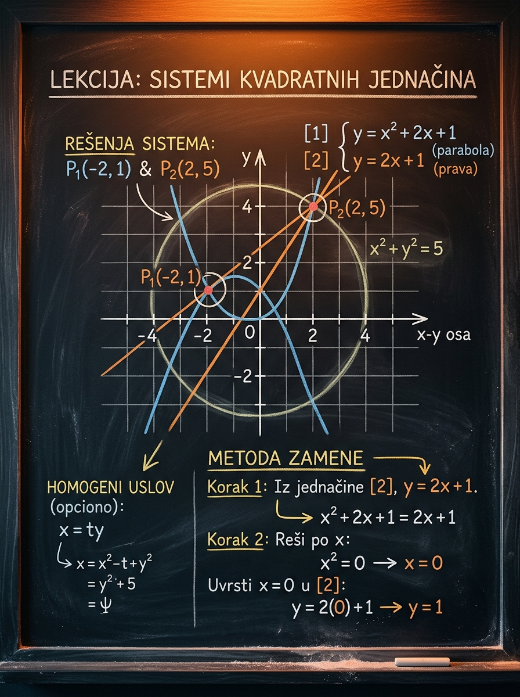

Šta ćeš naučiti
Kako da metodom zamene, oduzimanjem ili simetrijom sistem prebaciš na poznatu kvadratnu jednačinu u jednoj promenljivoj.
Ova lekcija te uči kako da sistem sa dve promenljive svedeš na jednu kvadratnu jednačinu, kako da biraš najkraći metod i kako da ne izgubiš nijedno rešenje. Fokus je na tipovima zadataka koji se realno pojavljuju na prijemnim ispitima: linearna plus kvadratna jednačina, dve kvadratne jednačine i homogeni sistemi.
Kako da metodom zamene, oduzimanjem ili simetrijom sistem prebaciš na poznatu kvadratnu jednačinu u jednoj promenljivoj.
Da staneš kada nađeš samo \(x\), a zaboraviš da vratiš \(y\), proveriš znak i upišeš uređene parove.
Brzo prepoznavanje strukture sistema: šta izoluješ, šta oduzimaš i kada homogen sistem svodiš na odnos \(\frac{x}{y}\).

Sistemi kvadratnih jednačina nisu samo još jedan skup formula. Oni proveravaju da li zaista umeš da povežeš više tema: sistem, kvadratnu jednačinu, geometrijski smisao preseka i disciplinu u proveri rešenja.
Na prijemnom se često gubi poen zato što kandidat nađe jednu promenljivu, a zaboravi da sistem traži uređeni par \((x,y)\). Ova lekcija gradi naviku da svaku dobijenu vrednost povežeš sa drugom promenljivom.
Kada jednačine posmatraš kao krive, odmah postaje jasno zašto sistem nekad ima nula, jedno ili dva rešenja. To ti kasnije pomaže i kod analitičke geometrije i kod parametarskih zadataka.
Dobar rezultat ne dolazi iz nasumičnog razvijanja izraza, nego iz brzog uočavanja strukture: izoluj, oduzmi, iskoristi simetriju ili pređi na odnos. Upravo to se ovde vežba.
Bez obzira na oblik jednačina, cilj je isti: pronaći sve parove \((x,y)\) koji istovremeno zadovoljavaju obe jednačine. To je polazna misao koja čuva od većine grešaka.
Rešenje sistema je skup svih uređenih parova \((x,y)\) za koje su obe jednakosti tačne. Ako je jednačina linearna, a druga kvadratna, i dalje je logika ista: tražimo njihove zajedničke tačke.
Ako jedna jednačina opisuje pravu, a druga parabolu, sistem ima onoliko realnih rešenja koliko prava i parabola imaju preseka. Ako se dodiruju, imaš jedno rešenje. Ako se ne seku, nema realnih rešenja.
Ovo je najčešći i najpitkiji tip zadatka. Linearna jednačina ti praktično poklanja jednu promenljivu izraženu preko druge. Tada sistem svodiš na jednu kvadratnu jednačinu i rešavaš je standardnim alatima.
Pošto su obe jednačine već izražene preko \(y\), dovoljno je da ih izjednačiš:
Odavde sledi \(x=3\) ili \(x=-1\). Zatim je \(y=x+1\), pa su rešenja \((3,4)\) i \((-1,0)\).
Iz prve jednačine uzmi \(y = 4 - x\).
Zato je \(x=1\) ili \(x=3\).
Ako je \(x=1\), tada je \(y=3\). Ako je \(x=3\), tada je \(y=1\).
Kada su obe jednačine kvadratne, učenici često instinktivno krenu u dugo razvijanje. To je obično najsporiji put. Mnogo češće se isplati da tražiš simetriju, da oduzmeš jednačine ili da uočiš poznate identitete.
Ako možeš da napišeš \(y=f(x)\) i \(y=g(x)\), tada sistem svodiš na \(f(x)=g(x)\). Drugim rečima: tražiš njihove preseke baš kao u grafičkom tumačenju.
Kada se u sistemu pojavljuju izrazi poput \(x^2+y^2\) i \(x^2-y^2\), sabiranje ili oduzimanje trenutno razdvaja kvadrate i štedi ceo red računanja.
U sistemima sa \(x^2+y^2\) i \(xy\) često ne moraš da rešavaš klasičnom zamenom. Identiteti te odmah vode do zbira ili razlike, a zatim do korena pomoćne kvadratne jednačine.
Saberi i oduzmi jednačine:
Pošto se u sistemu pojavljuju samo kvadrati, svi izbori znakova su dozvoljeni:
Prvo izračunaj zbir:
Zatim posmatraj \(x\) i \(y\) kao korene jednačine sa zadatim zbirom i proizvodom. Dobijaš parove \((1,2)\), \((2,1)\), \((-1,-2)\), \((-2,-1)\).
Homogeni sistemi drugog stepena često deluju čudno zato što ne traže „izolaciju promenljive" na uobičajen način. Njihova snaga je u tome što svaka jednačina ima isti stepen, pa se prirodno pojavljuje odnos \(\frac{x}{y}\) ili \(\frac{y}{x}\).
Ako je \(y \neq 0\), možeš da podeliš obe jednačine sa \(y^2\) i uvedeš smenu \(t=\frac{x}{y}\). Tada se sistem pretvara u dve kvadratne jednačine u promenljivoj \(t\).
Ako su jednačine homogene i desna strana je nula, tada skaliranje \((x,y)\mapsto (\lambda x,\lambda y)\) ne menja istinitost jednačina. Zato rešenja često leže na pravama kroz koordinatni početak, što objašnjava zašto dobijamo odnose tipa \(x=3y\).
Tada iz prve jednačine sledi \(x^2=0\), pa je \((0,0)\) rešenje.
Prva jednačina daje \(t=2\) ili \(t=3\), a druga \(t=1\) ili \(t=3\). Zajedničko je samo \(t=3\).
Rešenja su svi parovi oblika \((3k,k)\), gde je \(k \in \mathbb{R}\). U tom skupu se nalazi i \((0,0)\) za \(k=0\).
Menjaj koeficijente i gledaj kako se broj preseka menja. Tako direktno vidiš zašto posle zamene dobijaš nula, jedno ili dva realna rešenja. U laboratoriji koristiš numeričku aproksimaciju, a u teoriji i na papiru ostaješ u tačnom simboličkom zapisu.
Ovi primeri su birani tako da pokriju tri različita načina razmišljanja. Ako ih zaista razumeš, većina prijemnih zadataka iz ove oblasti prestaće da izgleda „nova".
Iz prve jednačine uzmi \(y=5-x\).
Odavde je \(x=2\) ili \(x=3\), pa su rešenja \((2,3)\) i \((3,2)\).
Ako je \(x+y=4\) i \(xy=3\), tada su \(x\) i \(y\) koreni jednačine \(t^2-4t+3=0\), pa dobijamo \((1,3)\) i \((3,1)\).
Ako je \(x+y=-4\), tada je pomoćna jednačina \(t^2+4t+3=0\), pa dobijamo \((-1,-3)\) i \((-3,-1)\).
Druga jednačina prisiljava \(x=2y\). Taj uslov automatski zadovoljava i prvu jednačinu.
Ovaj primer je važan jer pokazuje da sistem ne mora imati konačno mnogo rešenja.
Ova sekcija nije za slepo pamćenje, nego kao mapa: čim prepoznaš obrazac, znaš koji alat iz prethodnih lekcija treba da aktiviraš.
Najčešći ulaz u lekciju. Rešavaš kvadratnu jednačinu u jednoj promenljivoj i zatim vraćaš drugu koordinatu.
Algebarski tražiš preseke, a geometrijski gledaš gde se dve krive seku.
Kada imaš \(x^2+y^2\) i \(xy\), ovo je često najbrži put do zbira ili razlike.
Odmah dobijaš kvadrate promenljivih, a zatim vodiš računa o oba znaka pri korenovanju.
Pre podele obavezno proveri da li su \(y=0\) ili \(x=0\) mogući slučajevi. Tek onda uvodiš odnos.
Kada sistem svedeš na kvadratnu jednačinu u jednoj promenljivoj, diskriminanta ti odmah daje sliku o realnim rešenjima.
Greške u ovoj oblasti retko dolaze iz „teške matematike". Mnogo češće nastaju iz brzine, rutine ili preteranog širenja izraza bez plana.
Ako si dobio samo \(x\), sistem još nije rešen. Moraš da vratiš \(y\) i zapišeš uređene parove. Ovo je najtipičnija formalna greška.
Iz \(x^2=9\) sledi \(x=\pm3\), a ne samo \(x=3\). U sistemima sa kvadratima to direktno prepolovi broj tačnih rešenja ako nisi pažljiv.
Kod homogenih sistema ne smeš odmah deliti sa \(x\), \(y\), \(x^2\) ili \(y^2\) bez posebne provere. Tako vrlo lako izgubiš legitimno rešenje \((0,0)\) ili čitavu familiju rešenja.
Kada vidiš \(x^2+y^2\) i \(xy\), najčešće postoji elegantniji put od punog širenja. Na prijemnom vreme odlazi upravo na takvim nepotrebnim računima.
Jedna vrednost \(x\) može dati jednu vrednost \(y\), ali simetrični zadaci ponekad iz iste informacije stvaraju više uređenih parova. Uvek misli u parovima.
Ako ti grafička slika sugeriše da prava i parabola ne mogu imati četiri preseka, a ti si ih dobio, negde si pogrešio. Kratak mentalni graf je odlična kontrola.
Na prijemnom zadatak retko piše „primeni metodu zamene". Umesto toga, dobijaš sistem i moraš sam da odlučiš koji alat najbrže vodi do kraja. Tu se razlikuje mehaničko znanje od stvarne spremnosti.
Prvo pokušaj samostalno. Tek kada zaista zapneš, otvori rešenje. Na prijemnom nije cilj da zapamtiš napamet, nego da prepoznaš tip i odabereš metod.
Reši sistem:
Reši sistem:
Reši sistem:
Reši sistem:
Reši sistem:
Odredi broj realnih rešenja sistema i reši ga:
Najvažnija misaona poruka ove lekcije glasi: sistem kvadratnih jednačina retko se rešava „sirovom silom". Rešava se tako što ga prevedeš u poznat oblik. Nekad je to zamena, nekad simetrija, nekad oduzimanje, a kod homogenih sistema odnos promenljivih. Kada naučiš da prepoznaješ taj prelaz, zadatak postaje mnogo lakši.
Ovo su ideje koje treba da ostanu stabilne i kada prođe vreme od učenja. Ako njih držiš pod kontrolom, i novi zadaci iz ove oblasti biće rešivi.
Ne završavaj zadatak kada nađeš samo \(x\) ili samo \(y\). Uvek vrati drugu promenljivu i zapiši kompletna rešenja.
Izoluj jednu promenljivu, uvrsti je i svedi sistem na kvadratnu jednačinu u jednoj promenljivoj.
Pre nego što razviješ sve članove, proveri da li sistem traži sabiranje, oduzimanje ili identitete sa \(x+y\) i \(xy\).
Prvo proveri da li su \(x=0\) ili \(y=0\) mogući, a zatim po potrebi uvedi \(\frac{x}{y}\) ili \(\frac{y}{x}\).